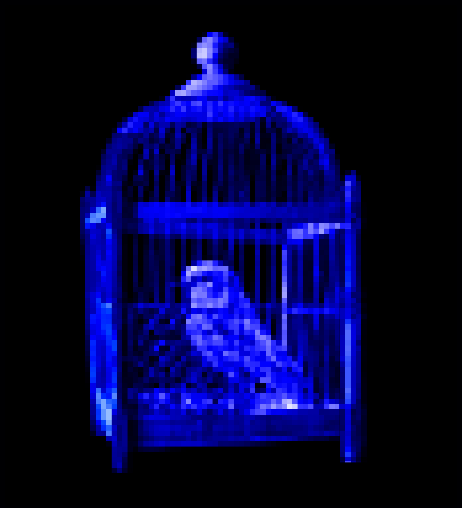
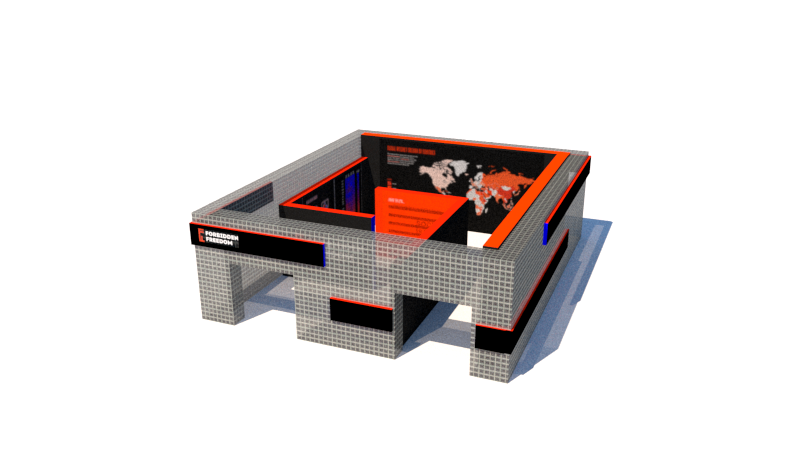
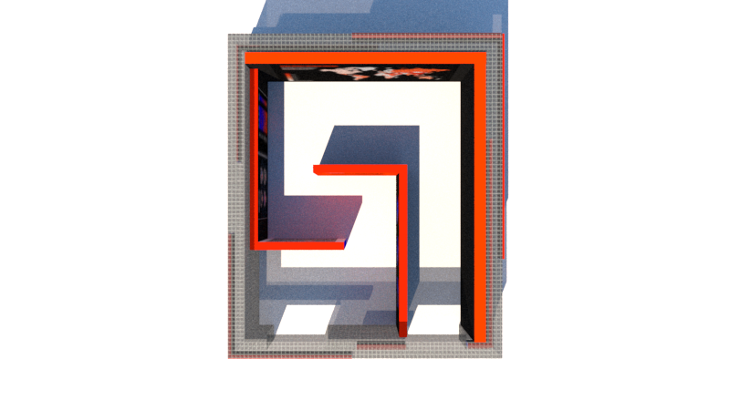
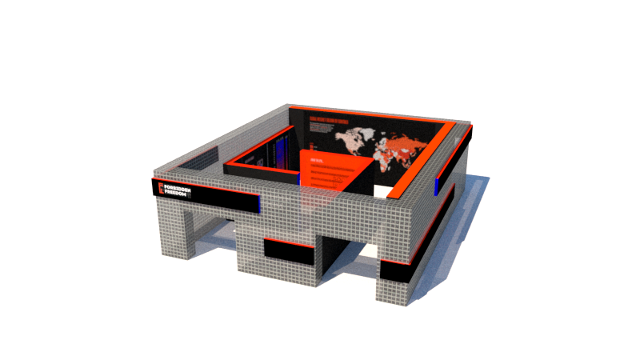
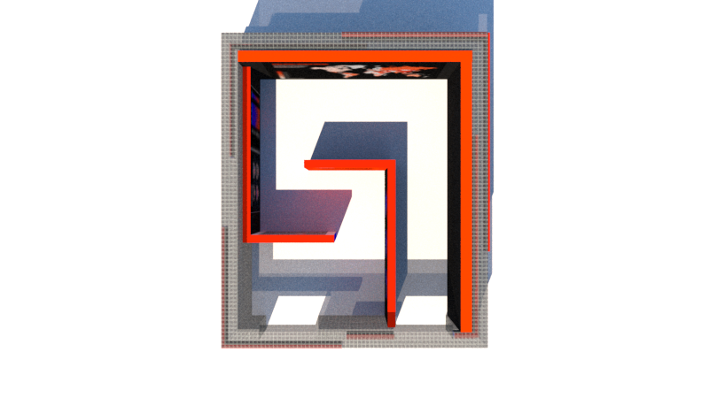

 



ARE YOU FREE TO
EXPRESS? THINK? DECIDE?
Everyone knows that a censorship system exists in certain countries,
but there is very little discussion of why it exists.
At first glance, the censorship seems invisible, but it’s omnipresent washing of people’s feelings and perceptions creates limits on the
information people receive, select and rely upon.
SHARE YOUR
THOUGHTS
WHAT IS CENSORSHIP?
“Censorship, the changing or the suppression or prohibition
of speech or writing that is deemed subversive of
the common good. It occurs in all manifestations of authority
to some degree, but in modern times it has been
of special importance in its relation to government and
the rule of law.”
ABOUT US
Forbidden Freedom is an organization that spreads awareness about the affects and consequences of censorship. This organization helps reach out the those who need a voice in their community but are unable to because of censorship reasons.
POP UP EVENT
Nathan Phillips Square
April 17th - 26th, 2020
10 A.M. to 7 P.M.
The pop-up will be located at Nathan
Phillips Square on April 17th - 26th, 2020
from 10 A.M. to 7 P.M. The event will
spread awareness of affects of censorship.
The walls are pixelated glass so people
from outside cannot see what is on display
inside. There are black bars on the
outside of the event to symbolize censorsed
words. The event is setup in a L
shape format for people to walk
through. As people walk through, they
will see posters of the event, data visualization
of consequences of breaking
censorship rules, a map of the world
that shows which country has the most
censorship and ending off with a blackboard
where people can write whatever
they would like.
-
-